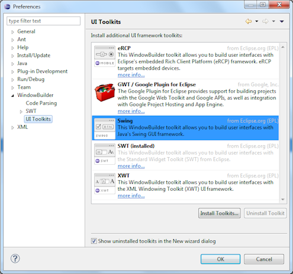
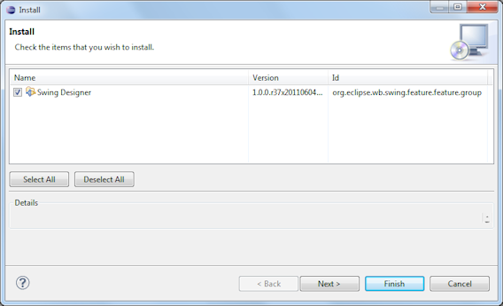
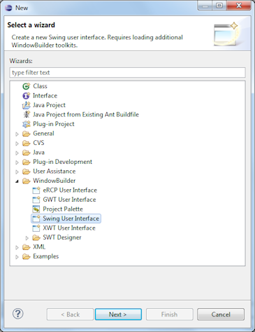
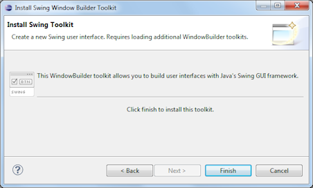

This page is used to control various UI Toolkits options.
WindowBuilder is designed with a plugable system to support creating
user interfaces in different UI toolkits. The available toolkits include
SWT, Swing, and the Google Web Toolkit (GWT).
The preference page shows the available toolkits and indicates which
ones are already installed. The list of available toolkits is refreshed
from the Eclipse servers when the preference page is opened. To install
a new UI toolkit into WindowBuilder, select the desired toolkit and
click the Install Toolkits… button. WindowBuilder will verify that
the toolkit’s update site is live and then hand off the installation
process to the standard Eclipse install dialog.

Installed tookits may be uninstalled using he Uninstall Toolkit button.
The Show uninstalled toolkits in the new wizard dialog determines whether uninstalled toolkits show up with a placeholder in the New Wizard under the WindowBuilder category.
Â
Selecting an uninstalled toolkit and clicking Next will present the user with the option of installing editing support for that toolkit. Clicking Finish will hand off the installation process to the standard Eclipse install dialog as shown above.
